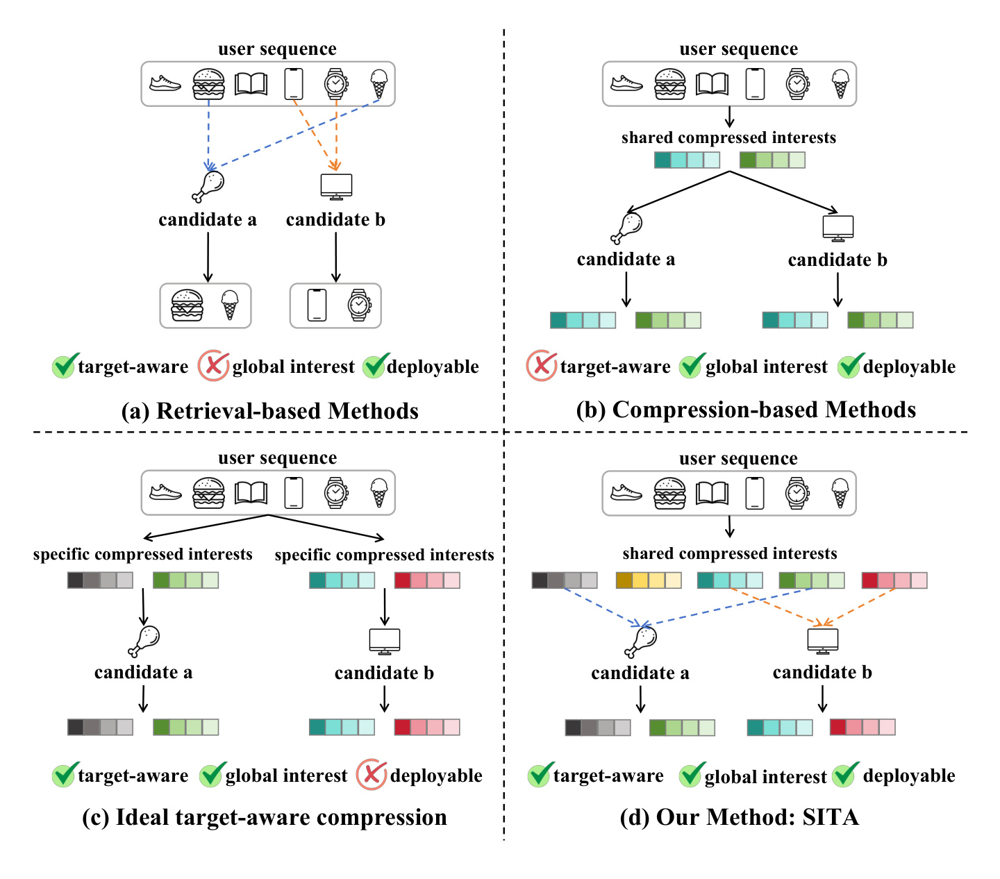
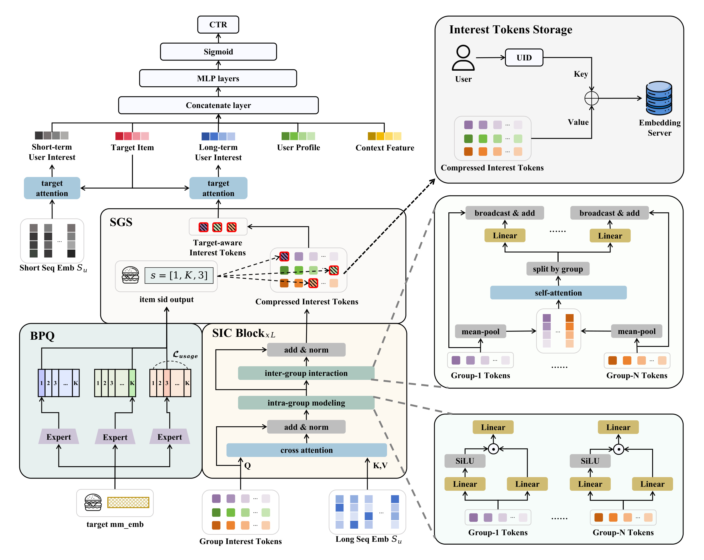
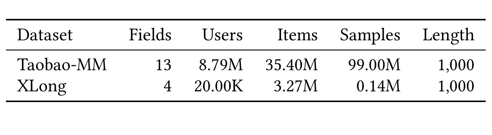
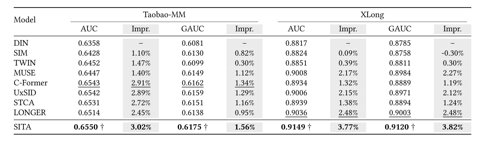
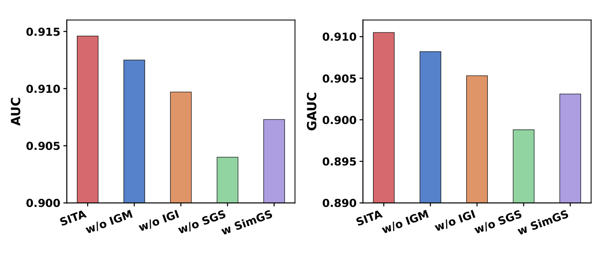
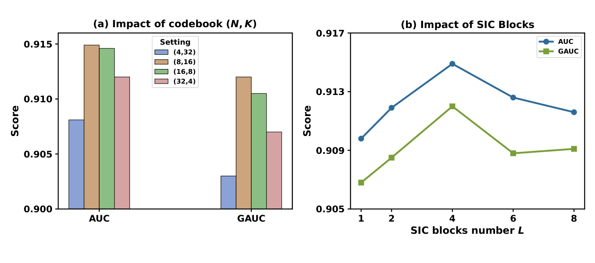
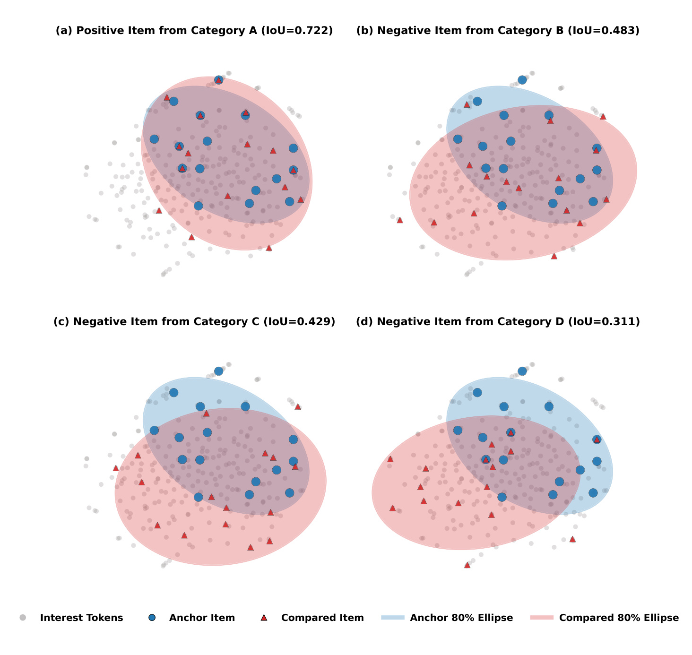
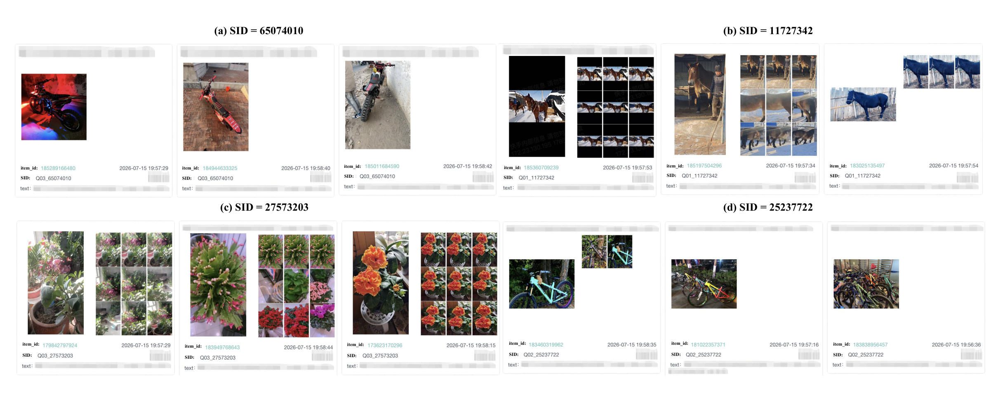
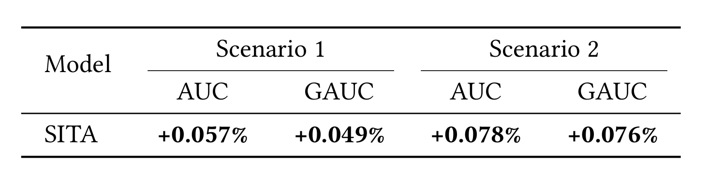
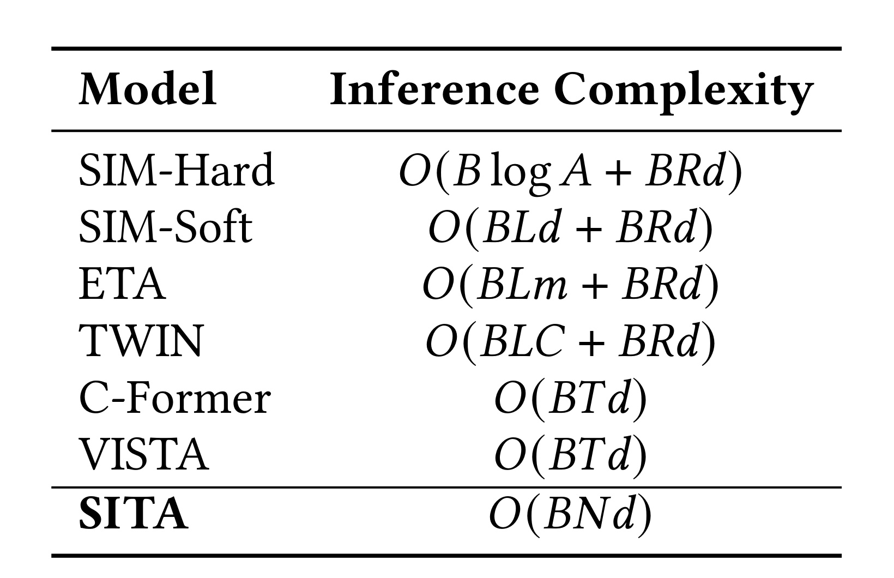

SITA：面向长序列推荐的目标感知语义兴趣 Token 压缩
《SITA: Semantic Interest Tokens for Target-Aware Compression in Long-Sequence Recommendation》由中国科学技术大学 Rui Zhou 等人与快手科技合作完成，一作主机构为中国科学技术大学，合作机构包括快手科技。论文于 2026 年 8 月 4 日公开，入口为 arXiv:2608.03692。论文页面与文内没有给出可独立核验的代码仓库，因此目前的开源状态是“未核验到独立代码链接”。
这项工作讨论的不是怎样把长序列模型再堆得更深，而是怎样改变长期兴趣在离线存储和在线候选打分之间的组织方式。SITA 用语义标识符把用户兴趣 token 排成可寻址的二维结构：离线阶段压缩完整历史，在线阶段由目标物品的语义标识符从每个语义组中取出一个 token，再做轻量目标注意力。由此，候选仍能看到与自己相关的长期兴趣，同时不必重新扫描原始历史。
动态检索能让长期兴趣随候选变化，却必须为每个候选重复处理历史；一次性压缩能复用全局兴趣，却把所有候选映射到同一份用户表示。若直接为每个用户—物品对保存专属压缩兴趣，存储又会膨胀到 $O(|\mathcal U||\mathcal V|)$，因此真正的缺口是：怎样在不恢复长序列在线计算和海量配对存储的前提下，让压缩兴趣仍然对目标敏感。
1. 背景和问题
现代排序系统常把用户历史视为最主要的长期偏好证据。序列从几十条扩展到上千甚至更长后，困难不只在注意力计算量：候选物品很多，若每个候选都和完整历史交互，历史编码成本会在候选维度被重复放大；若先把历史压成固定向量，虽然可以一次计算、多次复用，用户对“摩托车”和“花卉”的不同兴趣面却被迫共用同一个表示。论文据此把已有长序列方案归为两条主线。
第一条是检索式建模。SIM、TWIN 等方法根据目标物品从长历史中取出相关子序列，再对这段较短历史做精细交互。目标进入检索过程，因此表示天然是候选相关的；代价是每个候选都带来索引、检索和后续交互，而且被过滤掉的大部分行为不再参与本次预测。检索选得准时，它能放大局部相关兴趣；但用户偏好存在跨类别、跨周期的互补关系，只保留最相近行为可能把“全局兴趣”缩成一个局部邻域。
第二条是压缩式建模。C-Former、VISTA 等方法先读取完整历史，得到少量可重复使用的兴趣 token，在线只让候选与这些 token 交互。这条路线把最昂贵的长序列处理从候选打分中移走，也保留了整段历史的信息入口；但压缩过程不知道之后会来什么候选，同一用户的所有物品只能共享同一组压缩结果。即使下游再做 target attention，候选能做的也只是对一组目标无关 token 重新加权，无法改变压缩时已经形成的兴趣分区。

Figure 1 把矛盾拆成三项要求：目标感知、全局兴趣和可部署性。左上检索式方法对候选敏感且能部署，但只看检索子集；右上压缩式方法覆盖全历史且可复用，却不随候选改变；左下为每个候选准备专属压缩兴趣，在建模上同时满足前两项，却因为用户—物品配对存储而无法落地。右下 SITA 的关键变化是“共享但可寻址”：用户只保存一套结构化兴趣，不同候选用不同 SID 地址组合读取它。图中每个候选得到的颜色组合不同，说明目标感知来自选择路径，而不是复制整套用户表示。这个区分很重要：SITA 并没有声称免费生成无限份兴趣，而是用有限的 $N\times K$ 个 token 提供最多 $K^N$ 种组合选择。
理想的目标感知全局兴趣可写为 $h_{u,t}=f(S_u,v_t,x_u,x_c)$，其中候选 $v_t$ 明确参与长期历史编码；传统压缩式表示则是 $h_u=f(S_u,x_u,x_c)$，不含候选。论文真正要逼近的是前一个函数的行为，但不能承担为每个 $u,t$ 组合保存结果的成本。SITA 的思路是把候选的影响压缩成一组离散地址：目标不重新改写完整历史，只决定从每个语义组取哪个兴趣 token。这样，全局性来自离线压缩时仍读取完整 $S_u$，目标性来自在线地址选择，部署性来自用户侧固定大小存储。
这个问题对工业推荐尤其直接。线上排序往往同时打分大量候选，任何依赖原始序列长度 $L$ 的候选级操作都会放大延迟；用户兴趣又不是单一向量能概括的，过强压缩会牺牲小众或长期偏好。SITA 因而不是单纯的语义 ID 论文：语义 ID 在这里承担“地址协议”，必须同时约束物品编码、用户兴趣的分组位置和在线选择。若三者只在名称上对应而在训练中没有形成语义一致性，SID 查表就会退化成任意路由，这也是后续消融与案例实验要验证的核心。
更细一层看，这个设计还必须处理两个相反风险：离散语义空间太粗时，大量不相干物品碰撞到同一地址，目标感知会失真；空间太细时，用户在许多槽位中缺乏足够行为，压缩结果稀疏且难以稳定训练。与此同时，兴趣组既要保留可按 SID 查找的边界，又不能彼此完全隔离，否则跨类别行为无法互补。论文后续的 BPQ 均衡约束、SIC 组内/组间两级建模和 SGS 直接索引，正是分别回应这三类约束。
2. 方法
2.1 从并行语义量化建立可索引的目标空间
SITA 的总体链路分成离线重计算与在线候选打分两部分。Balanced Parallel Quantization（BPQ）先把物品多模态向量映射成由 $N$ 个离散分量组成的 SID；Structured Interest Compression（SIC）读取用户完整长序列，把兴趣压成 $N$ 组、每组 $K$ 个 token，并按用户写入 embedding server；候选到来时，SID-Guided Selection（SGS）用 SID 的第 $n$ 个分量在第 $n$ 组取一个 token，得到 $N$ 个目标相关长期兴趣。短期兴趣、用户画像、上下文与目标物品随后和这组长期兴趣共同进入排序 MLP。

Figure 2 左下的 BPQ 和中下的 SIC 是可离线更新的重模块：BPQ 为物品确定地址，SIC 让长序列写入与这些地址同构的兴趣槽位。右上存储框说明用户侧只以 UID 为键保存压缩 token，而不是以 UID—物品对为键保存候选专属向量。中部 SGS 展示了目标 SID 例如 $[1,K,3]$ 如何分别命中三组中的不同位置；红框 token 被取出后，经 target attention 聚合为长期兴趣。右侧两个放大框对应 SIC 的组间 self-attention 与组内 SwiGLU，强调结构化并不等于各组完全隔离。整张图最值得注意的是虚线边界：长序列 cross-attention 在存储前发生，候选在线阶段只走查表、目标注意力和排序塔。
符号解释：BPQ 输入物品侧多模态向量 $x\in\mathbb R^{d_m}$，$g_n$ 是第 $n$ 个 MLP 专家，$e_n$ 是该专家输出的潜在语义向量。并行的含义不是把前一码本残差交给后一码本，而是让多个专家从同一输入学习互补语义方面；因此各维 SID 没有先后依赖，后续也能一维对应一个兴趣组。每个专家再配有含 $K$ 个码字的码本 $\mathcal C_n=\{c_{n,1},\ldots,c_{n,K}\}$，用最近邻确定离散索引：
符号解释：$c_{n,k}$ 是第 $n$ 个码本的第 $k$ 个码字，$s_n$ 是目标物品在该语义组内的地址，完整 SID $s$ 是 $N$ 个地址的组合。理论上只维护 $NK$ 个编码单元，就能表达 $K^N$ 种组合。与残差量化优先追求逐级重建精度不同，BPQ 更关心组合空间能否提供互补、可索引的语义分解。训练包含重建损失、码本损失和 commitment 损失，并额外约束码字使用均衡：
符号解释：$\bar p_n$ 是一个 mini-batch 中第 $n$ 个码本的平均软分配概率，$\frac1K\mathbf1$ 是均匀分布。若多数物品只落在少数码字，名义上的 $K^N$ 组合会严重缩水，若干兴趣槽也几乎永远不会被 SGS 访问。均衡正则不是为了让所有物品机械均匀，而是抑制明显的 codeword collapse，让离散地址具备可用覆盖率。BPQ 的核心贡献是把“语义表示”变成了用户兴趣结构的寻址协议：同一个 $s_n$ 既描述物品在第 $n$ 个语义方面的类别，也决定在线读取第 $n$ 组的哪个兴趣 token。
2.2 结构化兴趣压缩：组内细化与组间通信
符号解释：得到语义地址后，SIC 要让用户历史写入同样的 $N\times K$ 结构。$N$ 是语义组数，$K$ 是每组兴趣 token 数，$d$ 是隐藏维度；$Z_u^{(0)}$ 不是最终用户表示，而是一组用于从长序列抽取信息的可学习查询。第 $l$ 个 SIC block 先以 token 为 query、用户行为序列为 key/value 做 cross-attention：
符号解释：$S_u$ 是嵌入后的完整行为序列，$H_u^{(l)}$ 是吸收本层历史信息后的兴趣 token，残差项保留上一层状态。这里的“全局兴趣”不是口号：每个 token 的注意力键值仍来自完整序列，而不是先检索的局部子集。计算较重，但目标无关，因此可以在用户表示更新链路完成并复用。cross-attention 之后，SITA 把 $H_u^{(l)}$ 切成 $N$ 组，每组 $K$ 个 token；组内使用独立参数的 SwiGLU，而不是所有组共享同一 FFN：
符号解释：$H_{u,n}^{(l)}\in\mathbb R^{K\times d}$ 是第 $n$ 个语义组，$W_n^{(g)},W_n^{(u)},W_n^{(o)}$ 是该组独立的门控与输出参数，$G_{u,n}^{(l)}$ 是组内细化结果。不同语义组需要学习不同非线性变换，否则 BPQ 给出的分组只剩位置编号。独立参数提升表达力，但也带来 $N$ 份 FFN 参数，实际部署要把语义组数与参数/缓存预算共同考虑。
仅做组内更新又会让兴趣彼此割裂。用户对摄影器材的偏好可能与旅行、运动相关，完全独立的语义槽无法传递互补证据。直接在全部 $NK$ 个 token 上 self-attention 虽然能通信，却会破坏后续按组寻址的边界，复杂度也是 $O((NK)^2)$。SITA 先对每组做 mean pooling，再只在 $N$ 个组摘要上 self-attention：
符号解释：$R_u^{(l)}$ 含 $N$ 个组级上下文，$R_{u,n}^{(l)}$ 经 MLP 变成第 $n$ 组的偏置并广播到组内 $K$ 个 token。这样，组间交互的二次复杂度从 $O((NK)^2)$ 降为 $O(N^2)$，同时每个 token 的组归属不变。其取舍也很明确：mean pooling 只向组间通道暴露一阶摘要，组内少数但重要的模式可能被平均；SIC 依赖堆叠多层，让 cross-attention、组内变换和组间偏置反复交换信息来补偿这种压缩。
经过 $L$ 个 SIC block 后得到 $Z_u^{(L)}$。这一过程没有目标物品参与，所以能在离线或准实时用户表示链路中计算，再以 UID 为键存储。用户侧只保存 $NK$ 个 token，存储复杂度为 $O(|\mathcal U|NK)$，不再出现 $|\mathcal U||\mathcal V|$。训练时 BPQ 的语义空间与 SIC 的兴趣槽要共同服务下游预测；推理时 BPQ 只需提供已确定的目标 SID，SIC 的长序列压缩结果则从存储读取。这个训练—推理边界是论文可部署性成立的前提。
2.3 SID 引导选择与在线目标聚合
符号解释：$s_t$ 是目标物品 $t$ 的 SID，$s_n\in\{1,\ldots,K\}$ 是它在第 $n$ 个并行码本中的地址。SGS 据此从用户第 $n$ 个语义组取出 $Z_{u,n,s_n}^{(L)}$，$E_{u,t}$ 因而是目标实际激活的 $N$ 个兴趣 token。不同候选即使共享同一用户存储，只要 SID 任一维不同，就会得到不同 token 组合。之后 target attention 再根据目标嵌入对这 $N$ 个 token 加权，产生目标感知长期兴趣，并与短期兴趣、用户画像和上下文拼接用于 CTR 预测。
SGS 不是在 token 空间做最近邻，而是利用 BPQ 与 SIC 训练形成的离散位置对应关系。相似度 Top-$N$ 选择看似更灵活，却会让 token 的组位置失去稳定语义，也需要对更多 token 计算相似度。SID 查找每组一次，成本为 $O(BN)$；目标与 $N$ 个选中 token 的注意力成本为 $O(BNd)$，因 $d\gg1$，总成本写为：
符号解释：$B$ 是同时打分的候选数，$N$ 是语义组数，$d$ 是 token 维度。表达式不含原始序列长度 $L$，也不含每组槽位数 $K$ 的全量扫描，因为每组是直接索引。这一复杂度结论依赖 SID 已可用、用户 token 已及时写入存储；若物品 SID 更新频繁、用户压缩结果陈旧或线上需要回退扫描历史，实际系统成本会超出论文的理想在线路径。
从信息流看，BPQ 决定“目标应该访问哪些地址”，SIC 决定“用户历史在每个地址写入什么”，SGS 决定“在线读取哪些地址”。三个模块缺一不可：没有 BPQ，地址不具语义；没有 SIC，槽位只含未组织的共享兴趣；没有 SGS，所有候选仍读取整套 token。SITA 的创新因而更接近一种目标感知压缩协议，而不是在既有压缩器后附加一次普通注意力。
3. 实验结果
3.1 数据集、评测协议与比较对象
公开实验使用 Taobao-MM 和 XLong，均把最大行为序列长度设为 1000，并按时间顺序划分数据，避免随机切分把未来行为泄漏到训练。两者都含多模态物品表示，但规模差异很大：Taobao-MM 有 8.79M 用户、35.40M 物品和 99.00M 样本；XLong 只有 20.00K 用户，却覆盖 3.27M 物品和 0.14M 样本，明显更稀疏。指标采用 AUC 与按用户/组加权聚合的 GAUC，后者更强调个体内部的排序质量。

Table 2 的关键不只是两行数字。Taobao-MM 的样本量约是 XLong 的七百倍，而 XLong 的物品数仍有 3.27M，说明后者存在更强的物品稀疏与长尾压力；同为 1000 长度并不意味着信息密度相同。SITA 若只在 Taobao-MM 略胜，可能只是大数据下的容量收益；它在 XLong 上的较大提升更能检验结构化语义地址能否帮助稀疏场景。不过表中没有公开正负样本比例、用户平均有效历史长度或多模态缺失率，因而无法仅凭统计表判断收益究竟来自长序列、语义特征还是数据稀疏性。
比较对象覆盖四类方法：DIN 是经典目标注意力基线；SIM、TWIN、MUSE 属于目标相关行为检索；C-Former 与 UxSID 属于压缩或语义 ID 增强；STCA、LONGER 是近期长序列模型。所有模型采用相同训练 epoch，稀疏与稠密参数分别使用 SparseAdam 和 AdamW，学习率为 $2\times10^{-3}$ 与 $2\times10^{-4}$，嵌入维度固定为 16。SITA 堆叠 4 个 SIC block；Taobao-MM 取 $(N,K)=(16,16)$，XLong 取 $(8,16)$。统一训练协议提升可比性，但论文没有在正文报告参数量、训练时长或离线压缩刷新耗时，在线复杂度之外的总拥有成本仍不完整。
3.2 公开数据主结果

Table 3 中，SITA 在 Taobao-MM 达到 AUC 0.6550、GAUC 0.6175，在 XLong 达到 AUC 0.9149、GAUC 0.9120，四项均为最佳，并以 † 标出相对最强基线的 paired t-test 显著性 $p<0.05$。Taobao-MM 上最接近的 C-Former 为 0.6543/0.6162，SITA 的绝对增量分别是 0.0007 与 0.0013；XLong 上最接近的 LONGER 为 0.9036/0.9003，绝对增量扩大到 0.0113 与 0.0117。表内 Impr. 是相对 DIN 的提升，不应误读成相对次优模型的提升：例如 XLong AUC 的 3.77% 对应 DIN，而 SITA 对 LONGER 的相对优势约为 1.25%。
不同基线的对照支持了论文的两层主张。相对 TWIN、MUSE 等检索式方法，SITA 不先删除历史行为，因而可以保留检索子序列之外的互补兴趣；相对 C-Former，SITA 又不让所有候选共享同一压缩表示，而是用 SID 组合选取。Taobao-MM 上 SITA 对强压缩基线的幅度较小，说明在数据密集场景，已有压缩器已捕获大部分收益；XLong 上提升更明显，可能意味着语义组织对稀疏物品空间更有帮助。可是两套公开数据都固定在长度 1000，表格没有按历史长度桶分解结果，所以“序列越长，SITA 优势越大”仍只是合理猜测，不是已被表 3 直接证明的结论。
结果也提醒评价 AUC 小数位时必须结合规模。Taobao-MM 的 0.0007 AUC 差异在 99M 样本上可能稳定，但它是否转化为用户体验或业务增益，需要线上指标确认；XLong 的较大差异来自较小样本，尽管给出显著性标记，仍希望看到多随机种子均值、标准差和置信区间。论文只说明 paired t-test，没有在表中展示方差，因此可验证的是“作者报告显著”，不是我们能从单表重算检验。
3.3 组件消融与超参数
论文在 XLong 上构造四个变体：w/o IGM 把每组独立 SwiGLU 换成共享网络；w/o IGI 删除组间交互；w/o SGS 让所有目标使用同一套兴趣 token；w/ SimGS 保留相同选择数量，但用相似度 Top-$N$ 替换 SID 查表。

Figure 3 的两面板趋势一致：完整 SITA 最高，移除 SGS 的下降最大，说明“目标选择”不是可有可无的末端模块；SimGS 能恢复一部分性能，却仍明显落后完整模型，支持收益不仅来自“少选几个相关 token”，还来自 BPQ 地址与 SIC 分组之间的结构对应。w/o IGM 与 w/o IGI 也都下降，其中删除组间交互比共享组内网络更差，表明保留语义分组并不等于隔绝不同兴趣。图中没有标出误差条和精确柱值，因此适合判断模块贡献排序，不宜从像素高度声称具体下降多少。
从柱高还可以读出另一个约束：组内独立变换、组间通信和目标选择不是彼此替代的三条支路。即便保留 SGS，削弱 SIC 内部任一层级仍会损失；即便保留完整压缩器，把 SID 选择改成相似度搜索也不能回到完整模型。这说明训练阶段形成的是“位置语义—兴趣内容—目标路由”的联合结构，单独增强某一部分无法补齐另外两部分。

Figure 4 左侧固定 $NK=128$，比较 $(4,32)$、$(8,16)$、$(16,8)$、$(32,4)$。较平衡的 $(8,16)$ 在 AUC、GAUC 上最好或接近最好；组太少会减少可组合语义方面，组太多又让每组码字不足并增加组专属网络负担。右侧把 SIC block 从 1 增到 8，AUC/GAUC 都在 4 层达到峰值，之后回落。这个结果与方法设计相符：层数不足时 cross-attention、组内细化和组间通信尚未充分；层数过深可能过平滑、优化变难或引入冗余。需要注意，左图固定的是 token 总数而非总参数量，改变 $N$ 会改变组专属 SwiGLU 数量，所以“平衡码本更好”可能同时混入参数分配差异。
两张图共同说明结构化约束确实在工作，但消融仍有缺口。论文没有展示 BPQ 去掉 usage-balance 正则后的码字占用率、SID 碰撞率和性能，也没有把并行量化与同等码本预算的残差量化直接对照；因此 BPQ 相对其他语义 ID 架构的独立贡献没有像 SGS 那样被充分隔离。复现时应额外记录各码本 perplexity、空码比例、不同组之间的互信息，以及 SID 更新前后的线上稳定性。
3.4 目标选择与语义组织案例

Figure 5 用 t-SNE 展示一个锚点物品与比较物品选中的兴趣 token，并以 80% 协方差椭圆的 IoU 衡量区域重叠。同类别正样本的 IoU 为 0.722，三个跨类别负样本依次为 0.483、0.429、0.311。它支持两点：语义相近目标会访问更多相同或相邻兴趣区域，说明选择具有类内一致性；同类目标的椭圆又不完全重合，说明 SID 组合仍保留物品级差异。随着负样本类别偏离，重叠逐步降低，符合目标感知选择的预期。但 t-SNE 会扭曲全局距离，单个锚点案例也不能估计总体分布，最好补充大量物品对上的原空间重叠统计与类别条件分布。
此外，灰点是完整兴趣 token 背景，蓝点与红三角才是两个目标实际命中的子集；椭圆面积和方向同时反映选择分散程度，而不只反映中心距离。因此高 IoU 表示两组选择覆盖相近区域，并不等价于两目标逐维命中完全相同 token。这个区别恰好符合并行 SID 的组合属性：同类物品可以共享若干语义维度，同时在另一些维度分开。

Figure 6 从工业数据中选取四个 SID，每个 SID 展示三件物品。65074010 组集中在摩托车，27573203 组集中在花卉，25237722 组集中在自行车，11727342 组则是马或牛等牲畜视觉内容。它说明 BPQ 的并行组合并非随机哈希，相同 SID 能聚合同一高层概念；这为 SGS 按 SID 读取同一兴趣槽提供了语义基础。另一方面，牲畜组把马与牛放在一起，说明 SID 更像粗粒度语义桶而非精确类别标签。图片做了隐私马赛克，无法进一步核验文本、行为场景等信号是否也一致；案例只能证明“存在语义连贯样例”，不能代替全量纯度、覆盖率和冲突率评估。
Figure 5 检查的是“同一用户存储中，目标改变时选中的 token 是否有规律”，Figure 6 检查的是“目标 SID 本身是否有可解释语义”。两层证据需要同时成立：前者单独成立可能只是 token 相似度现象，后者单独成立也不保证用户兴趣槽写入正确。论文用这两个案例补上了从物品语义到用户选择的机制链，但仍缺用户历史层面的可解释追踪，例如某个被激活 token 实际关注了哪些行为、这些行为是否与目标类别相符。
3.5 工业效果与复杂度证据
工业评测来自一个拥有数亿日活用户的生产推荐平台。SITA 只替换原有长序列模块，其余推荐框架保持不变；模型从线上 baseline 最新 checkpoint 初始化，新参数随机初始化，两者持续消费相同流式训练数据。最大行为序列长度设为 2500，指标是两个生产场景中 Effective-View 的稳定平均 AUC 和 GAUC。论文称在这一数据规模下，约 0.05% 的相对提升已具有实际业务意义。

Table 4 报告场景 1 的 AUC +0.057%、GAUC +0.049%，场景 2 的 AUC +0.078%、GAUC +0.076%。四项方向一致，且除场景 1 GAUC 略低于 0.05% 外，其余达到论文给出的“实践显著”量级。它比公开数据更贴近部署主张：SITA 在相同下游框架和连续数据流中替换共享兴趣压缩模块，收益可以归因于长序列表示变化。不过正文称这是工业 evaluation，并未明确给出真实流量 A/B 的分流比例、持续天数、置信区间、延迟分位数或资源消耗，因此不能把它等同于完整线上业务实验。表中也只有排序离线指标，没有停留时长、留存、生态多样性等用户层结果。
两个场景的 GAUC 与 AUC 同向还说明提升不是仅由少数大流量用户推动；不过没有分用户活跃度和历史长度的分桶，仍无法判断低活用户是否同样受益。尤其场景 1 的 GAUC +0.049% 位于作者经验阈值附近，更需要误差区间才能区分稳定增益与窗口波动。

Table 1 从符号复杂度补充部署证据。SIM-Soft、ETA、TWIN 的候选级成本显式含原始序列长度 $L$、检索长度 $R$、哈希数 $m$ 或交叉特征数 $C$；C-Former、VISTA 对 $T$ 个压缩 token 做目标交互，为 $O(BTd)$；SITA 每个语义组只索引一个 token，目标注意力为 $O(BNd)$。当 $N<K$ 且 $T$ 近似 $NK$ 时，SITA 在线参与交互的 token 数显著更少。表格没有覆盖 BPQ 编码、SIC 离线刷新、embedding server 存储与网络访问，也没有真实延迟或吞吐测量，所以它证明的是在线计算路径的渐近优势，而不是端到端成本已经全面低于所有基线。
把 Table 4 与 Table 1 合在一起看，SITA 的工业证据链是“固定大小用户存储—候选按 SID 直接索引—目标注意力不依赖 $L$—生产数据上 AUC/GAUC 有一致小幅增益”。这条链比只有公开 AUC 更完整，但仍缺服务指标和更新指标。特别是用户兴趣 token 的刷新频率决定表示陈旧度，SID 版本变化又要求物品索引与用户槽位保持一致；论文没有量化版本切换、缓存失效和冷启动成本。这些不是否定实验，而是判断可复现性与跨平台迁移时必须补齐的工程证据。
4. 总结
4.1 我的判断
SITA 最有价值的地方是重新安排候选感知发生的位置。检索式方法在原始历史上做候选相关筛选，压缩式方法在共享兴趣之后做候选交互；SITA 则让语义 ID 同时定义物品地址和用户兴趣槽，候选只改变读取组合。这样既保留 SIC 对完整历史的离线建模，又把在线目标相关计算限制在 $N$ 个 token 上。公开数据、组件消融、语义案例和工业指标基本形成了闭环，尤其 w/o SGS 与 SimGS 的差异支持“结构对应”而不只是稀疏选择。
我不会把它理解成已经消除了目标感知与效率之间的一切矛盾。SITA 把成本从候选阶段搬到语义码本训练、用户 token 压缩、存储刷新和版本一致性上；这些成本更容易工程化摊销，却仍真实存在。论文也主要证明 AUC/GAUC 和渐近复杂度，没有完整展示在线延迟、训练吞吐、存储字节和刷新 SLA。它更准确的定位是：提出了一个可落地的目标感知压缩接口，并给出较强但尚不完备的工业证据。
4.2 工程启发与复现建议
对长序列排序系统，首先可以把“共享用户表示”改造成“少量可寻址兴趣槽”，并要求物品侧地址与用户侧槽位通过同一训练目标对齐。其次，离线/在线边界应作为模型结构的一部分验收：SIC 是否完全移出候选打分、SGS 是否只做 $N$ 次直接索引、target attention 是否仅处理选中 token，都应由算子级 tracing 验证。再次，BPQ 的均衡不能只看总损失，需要持续监控每个码本的占用率、perplexity、空码比例、SID 迁移率和不同语义组冗余。
复现优先级可以分三步：先在 XLong 上复现 Table 3 与 Figure 3，确认 SGS 相对无选择和相似度选择的独立价值；再固定总 token 数，系统扫描 $(N,K,L)$ 并同时记录参数量、训练显存和延迟，避免只按 AUC 选配置；最后模拟流式更新，测量用户 token 陈旧度、SID 版本切换和新物品冷启动。若要迁移到大模型个性化记忆，SID 可类比查询的离散路由码，SIC 可类比用户长期记忆槽，但必须防止离散地址把细粒度意图过早合并。
4.3 局限与后续跟进
局限至少有五点。第一，公开实验只有两个数据集且序列长度都固定为 1000，没有按历史长度、活跃度或兴趣多样性分桶，长序列收益的适用边界不清。第二，工业实验缺少真实流量 A/B 配置、持续时间、显著性区间、延迟和资源数据，无法完整复算线上价值。第三，BPQ 依赖物品多模态表征，模态缺失、噪声、热门偏置与语义漂移都会影响 SID，再沿地址传播到用户兴趣选择。第四，组间通信只用 mean pooling 摘要，可能忽略组内少数强兴趣；组专属 SwiGLU 又随 $N$ 增加参数。第五，论文没有公开代码链接，数据处理、工业特征和存储实现难以完全复现。
后续最值得跟进三条。其一，等待代码或更完整附录，核验重建、码本、commitment 与 usage-balance 各损失权重，并复现码字占用消融；这决定 BPQ 是否稳定。其二，补做目标选择的总体统计：按类别、SID 频次和用户兴趣熵报告 token 区域重叠、碰撞与纯度，而不只依赖 t-SNE 案例。其三，在真实服务链路比较端到端 P50/P95/P99 延迟、embedding server 读取量、用户 token 刷新吞吐和模型版本迁移成本；只有这些指标与 AUC/GAUC 同时成立，才能确认目标感知压缩的工程收益没有被离线维护成本抵消。